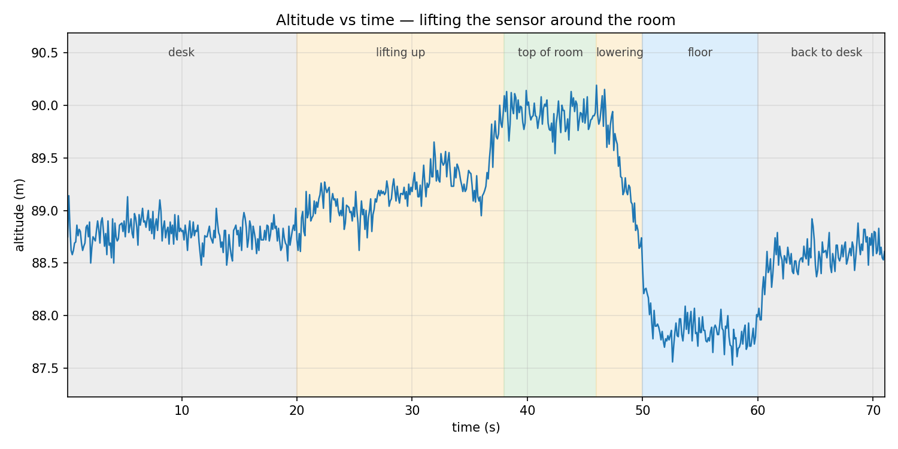

Intro
It's 2:30am. I have a quiz tomorrow morning. I just finished my first real hardware project. I've messed with arduinos before, but only the kind of stuff where you blink an LED. Nothing with actual sensors.
This one is different. As a data scientist, I've always wanted to build my own little breadboard data-collecting computer, and tonight I finally pulled it off. And it's totally awesome: an avionics computer.
Right now all it does is measure humidity, pressure, and altitude, so I'm not sure "avionics" is really fair yet. But this is just phase 1 of many. By the end I want something worthy of a model rocket.

What's Next
Next up: learning to solder. The IMU I bought (Inertial Measurement Unit, the chip that handles motion) came with its header pins separate, so I can't plug it into a breadboard yet. Once it's wired in, the logger picks up six new dimensions of data:
- 3-axis accelerometer (linear acceleration and the direction of gravity)
- 3-axis gyroscope (rotational velocity)
After that, I want to tune the sensors, learn some CAD, build a proper housing for the electronics, and eventually throw the whole thing off a tall building with a parachute, kinda like one of those egg challenges. That would be funny.
Before any of that though, I think my first real test will be an elevator ride in my 22-floor apartment. Lots of pressure change, lots of acceleration. It would be fun to reconstruct the path through 3D space and overlay it with live atmospheric readings.
I'll keep the 0 readers of this forsaken blog updated.

Parts List
Here is everything that went into v1:
- Arduino Uno R3: the microcontroller, the brain of the operation
- BME280 module: pressure / temperature / humidity sensor (I2C)
- MPU6050 / GY-521 module: 6-DoF IMU (3-axis accel + 3-axis gyro), not yet wired in because the header pins need to be soldered
- WWZMDiB microSD module: SPI card reader, this is what makes the data persistent
- 32GB SanDisk microSDHC card: stores the CSV logs
- 1 breadboard: 400-point half size
- Jumper wire kit: assorted lengths and ends (male-to-male, male-to-female, female-to-female)
- USB-B to USB-C cable: Uno to MacBook for programming and tethered power
- USB-C to DC 9V PD cable: eventually for portable power from a USB-C PD battery bank
- microSD to USB adapter: for reading the logs on my laptop

Test from My Room
To prove the thing actually works, I sat at my desk and walked the sensor through a little choreography:
- Leave it sitting on the desk for about 16 seconds (the baseline)
- Hold it as high overhead as I can reach for about 25 seconds
- Sit down and put it near the floor for about 10 seconds
- Back to the desk
Then I pulled the microSD card, opened the CSV on my laptop, and plotted altitude vs. time:

The shape matches the choreography exactly: flat on the desk, rising during the lift, holding higher at the top of the room, dropping for the floor segment, and climbing back at the end. The full swing was about 2.66 meters peak-to-trough, which is roughly the difference between my overhead reach and the floor. So I think the sensor is being honest.
When it sat still on the desk, the altitude reading drifted by about 12 cm (one standard deviation). Compared to a 2.6-meter swing, that's a signal-to-noise ratio of about 13×. Good enough to see the real motion in the raw data without any filtering or smoothing. For something like an elevator ride, or a model rocket flight, the signal is going to dwarf the noise. But I would like to see what kind of tuning I can do with the sensors.
Conclusion
About $30 of breadboard parts can now detect when I pick them up off my desk. Next up: solder the IMU and see what shows up in the data when I add three axes of acceleration and three axes of rotation.